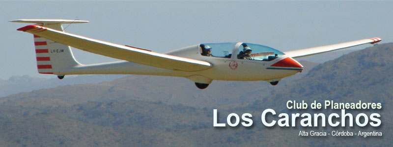
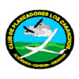
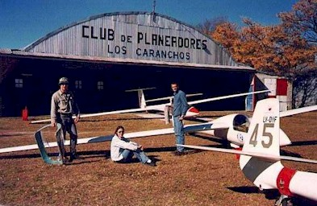
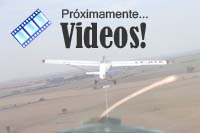

Bibliografía
Noticias
Material de Vuelo
Actividad de Vuelo
Cursos
Comisión Directiva
Fotos
Contáctenos
Otros Vínculos


Bienvenidos a la página del Club de Planeadores Los Caranchos, donde podrá conocer de la actividad deportiva de vuelo en planeadores que se realiza en esta Institución.

Objetivos del Club
Nuestro Club es una Institución sin fines de lucro cuya única meta es el desarrollo del vuelo a vela, la instrucción del mismo y la competencia deportiva.
Perfil de la organización
Los socios que lo componen son todos deportistas amateurs, y es posible integrarse al Club realizando el curso de piloto de planeador, y en el caso de que sea piloto de avión podrá realizar el curso de piloto remolcador. Estamos afiliados a la Federación Argentina de Vuelo a Vela (FAVAV), y por su intermedio a la Federación Aeronáutica Internacional (FAI).
Consideraciones sobre esta Página Web
Esta página fue diseñada con la meta de difundir la actividad deportiva del vuelo a vela que se desarrolla en el Club de Planeadores Los Caranchos. Por consiguiente fue organizada para el mejor entendimiento de personas con escasos o nulos conocimientos sobre este deporte, aunque también se incluyen artículos que puedan ser de interés para pilotos formados a los que se accede en Bibliografía. Si desea conocer las últimas actividades desarrolladas en nuestro club, visite Noticias (Última noticia el 12/04/06). Por otra parte, todas las máquinas que son patrimonio de nuestro Club son exhibidas mediante fotografías y descripción de sus características técnicas en Material de Vuelo. Las diversas facetas que presenta el vuelo a vela en planeador, como el vuelo en llanura, montaña, campeonatos, etc. podrá encontrarlas en Actividad de Vuelo. Tanto el costo como las características de los cursos que se brindan en esta Institución, están en Cursos. Cada vez que se renueva la Comisión Directiva de este Club se actualiza esta página. En Fotos Ud. encontrará material tanto sobre las instalaciones y la zona aledaña al aeródromo, como así también sobre la serranía cordobesa, pudiendo ver los sitios de mayor interés turístico y paisajístico de nuestra provincia mediante fotografías obtenidas en vuelo de planeador. Además se incluyen fotos obtenidas en la Cordillera de Los Andes (Provincia de Mendoza), y en la precordillera de la Provincia de Catamarca. No dude en consultarnos: En la página Contáctenos encontrará teléfonos y direcciones de correo electrónico a tal efecto.
VISITANTE Nº



Noticias
Sábado 09/04/2006
Después del paso de un frente frío tuvimos un hermoso día con techo de hasta 1.800 metros. La condiciones eran locales y los tres planeadores que prefijaron un ida y vuelta de 100 Km. se vieron en problemas al llegar al vértice (Río Segundo) por lo que tuvieron que "prenderse" por debajo de 500 metros. [Ver más]
Sábado 11/03/2006
Adaptación de Tomás Zárate Ruibal al avión Ranquel LV- HYR. [Ver más]
Domingo 19/02/2006
Primer VUELO SOLO del año de nuestro alumno Matías Toledo [Ver más]